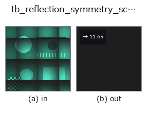

typed op• Data kinds: points → feature
• Call: fullseye.apply(img, "tb_reflection_symmetry_score", a=0.5, b=0.5) (2-D model = एक image + दो scalar knobs a,b∈[0,1])

*Figure synthetic 128×128 input पर सच में चलाकर मिला output है। बाईं ओर input, दाईं ओर output। Point clouds ऊपर से देखे गए scatter के रूप में (brightness = z), 1-D series line के रूप में, volumes z दिशा में maximum-intensity projection के रूप में, videos बीच के frame के रूप में, complex images amplitude के रूप में, और जो return values चित्र नहीं बन सकते वे स्वयं values के रूप में दिखाए जाते हैं।*
*Knob a output नहीं बदलता (मापा गया: 0.1 / 0.5 / 0.9 पर एक जैसा)।*
*Knob b output नहीं बदलता (मापा गया: 0.1 / 0.5 / 0.9 पर एक जैसा)।*
Stages (पहले आने वाले ops → यह op, बाएँ से क्रम में):
▸ tb_reflection_symmetry_score: stages का figure (docs site)
reflection symmetry score = chamfer(mirrored, मूल) / median nearest-neighbour spacing (जितना छोटा उतना symmetric, scale-invariant)। → float।
reflect_points से point cloud को plane के सापेक्ष mirror किया जाता है, और मूल cloud से symmetric Chamfer distance (chamfer_distance:
दोनों दिशाओं की nearest neighbour दूरी के mean का mean) को मूल cloud की nearest neighbour spacing के median से भाग दिया जाता है। यह "mirror image मूल point से point spacing का कितना गुना हटा है" वाली dimensionless quantity है, इसलिए coordinate को किसी constant से गुणा करने पर मान नहीं बदलता।
• points: (N,3) point cloud। plane_point / plane_normal: candidate plane (normal अंदर normalise होता है)।
• fail-closed: point cloud खाली हो या (N,3) न हो (chamfer_distance ValueError देता है), या सभी point एक ही हों और spacing परिभाषित न हो (ValueError)। केवल तब जब duplicate point से median spacing 0 हो जाए, centroid से RMS radius × 1e-12 को floor माना जाता है।
पढ़ने की सावधानी: पूरी तरह symmetric shape में भी mirror के point मूल sample point पर ठीक नहीं बैठते, इसलिए score 0 नहीं होता और लगभग point spacing जितना floor रहता है (मापे गए मान detect_reflection_symmetry की table में)। threshold से स्वीकार/अस्वीकार तय करने के बजाय कई candidate sweep करके न्यूनतम मान और दूसरे स्थान से उसका अंतर (margin) देखें। PCA के 3 axis के अलावा candidate plane आज़माने हों तो इस function को सीधे plane parameter पर sweep करें।
2-D evolution registry में bridge किया गया 3d का op reflection_symmetry_score। implementation वही है; केवल calling convention को op(v, a, b) के अनुरूप किया गया है। इस op में कोई tunable parameter नहीं है; न a उपयोग होता है, न b।
• Sample data catalog (DL URL / license) — 2-D के लिए skimage.data (BSD/public) + synthetic, 3-D के लिए real data sources (Stanford/PDS आदि) के DL URL।
• Operators का स्रोत और संदर्भ — इस op family के मूल research/methods के स्रोत।
नीचे का program सच में चलता है, यह जाँचा गया है (figure वाला ही input)। Studio की help में यह block buttons बन जाता है, जिनसे इसे वहीं load करके चलाया जा सकता है।
img_to_points 0.50 0.50 tb_reflection_symmetry_score 0.50 0.50
▸ यह pipeline load करें · Load करके चलाएँ
नीचे के उदाहरण मूल ledger op reflection_symmetry_score को call करते हैं। यह bridge op वही implementation है, बस fn(v, a, b) convention के अनुसार ढाला गया है, इसलिए व्यवहार वैसा ही लागू होता है (केवल call का रूप अलग है)।
• dl_mesh_symmetry — py -3.11 examples_3d/dl_mesh_symmetry.py
• reflection_symmetry — py -3.11 examples_3d/reflection_symmetry.py
feature को input के रूप में लेते हैं)typed)tb_points_to_voxel · tb_estimate_point_normals · tb_iss_keypoints · tb_project_points · tb_render_point_depth · tb_statistical_outlier_removal · tb_radius_outlier_removal · tb_voxel_grid_downsample
*Provenance: ops.py — 2D operator registry. यह per-op note tools/opdocs.py md से अपने-आप generate होता है (हाथ से edit न करें)।*
© 2026 Kazufumi Furuse — Fullseye operator documentation. Licensed under Apache-2.0.